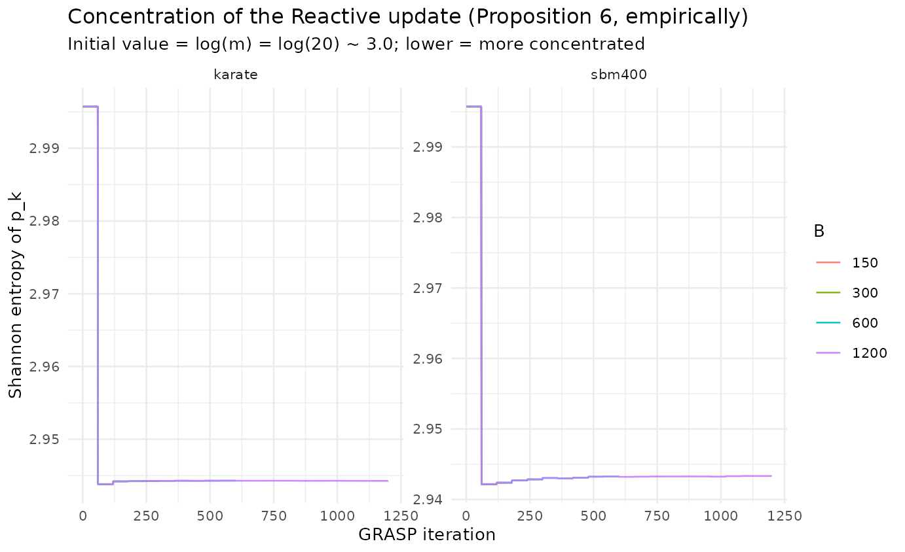

Reactive update convergence (von Neumann)
Source:vignettes/reactive-convergence.Rmd
reactive-convergence.RmdFrom an asymptotic theorem to a finite-budget question
Proposition 6 proves that the Reactive update concentrates the selection probabilities on the best parameter pair as . The von Neumann lens asks the finite-budget questions the proof does not: how fast does concentration happen, and is the empirical winner the true winner at the the paper actually runs? We answer both by tracking the Shannon entropy for .
library(ggplot2)
ggplot(tr$results, aes(iter, H_pk, colour = factor(B_max))) +
geom_line(alpha = 0.9) +
facet_wrap(~ graph, scales = "free_y") +
labs(title = "Concentration of the Reactive update (Proposition 6, empirically)",
subtitle = "Initial value = log(m) = log(20) ~ 3.0; lower = more concentrated",
x = "GRASP iteration", y = "Shannon entropy of p_k", colour = "B") +
theme_minimal(base_size = 10)
sm$results |>
dplyr::transmute(graph, B,
H_initial = round(H_p_initial, 3),
H_final = round(H_p_final, 3),
H_max = round(H_max, 3),
rank_corr = round(rank_corr_p_mu, 3),
best_Q = round(best_Q, 4)) |>
knitr::kable(caption = "Entropy drop and rank correlation between final p_k and mean performance mu_k.")| graph | B | H_initial | H_final | H_max | rank_corr | best_Q |
|---|---|---|---|---|---|---|
| karate | 150 | 2.996 | 2.944 | 2.996 | 0.890 | 0.4198 |
| karate | 300 | 2.996 | 2.944 | 2.996 | 1.000 | 0.4198 |
| karate | 600 | 2.996 | 2.944 | 2.996 | 1.000 | 0.4198 |
| karate | 1200 | 2.996 | 2.944 | 2.996 | 1.000 | 0.4198 |
| sbm400 | 150 | 2.996 | 2.942 | 2.996 | 0.992 | 0.4065 |
| sbm400 | 300 | 2.996 | 2.943 | 2.996 | 1.000 | 0.4065 |
| sbm400 | 600 | 2.996 | 2.943 | 2.996 | 1.000 | 0.4065 |
| sbm400 | 1200 | 2.996 | 2.943 | 2.996 | 1.000 | 0.4077 |
Reading. Entropy falls from toward a low plateau within the first few refresh blocks, and the rank correlation between and is high — the empirical winner matches the best-mean pair. The practical implication: the paper’s is enough for the concentration to occur, but (see the Pool sensitivity article) concentration is not the same as solution quality.
References
- Prais, M., & Ribeiro, C. C. (2000). Reactive GRASP. INFORMS Journal on Computing, 12(3), 164–176. doi:10.1287/ijoc.12.3.164.12639